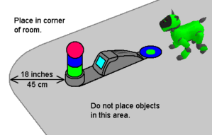

Popular
Tools
Tech Info
Links
DogsLife Self Docking
Contents of this website are freeware and/or copyrighted material, and may not be sold under any circumstances.
Email: dogsbody@dogsbodynet.com Home: https://dogsbodynet.com
| Self Docking in
DogsLife!!! When hungry AIBO looks for the charger. If visible, he approaches the charging station and self-docks. Unfortunately, there is no way for DogsLife to wake up after charging is complete, so you'll have to help out for now. Self docking works well, but is still somewhat "experimental". There are simply too many lighting & floor combinations to test. DogsLife adapts to various lighting conditions, and usually works better than Sony's Recognition. However, self docking is very complex and one never knows what issues remain. To test self docking (even if DogsLife isn't hungry), position him two or three feet from the charger and say "Action One". Self Docking works with 210 and 220 models only, and requires the charger extensions from Sony's AIBO Recognition, or DIY extensions. Sorry, but the ERS-310 isn't supported. Requirements:
 Demonstration Movie: DogsBody showing off self-docking (he has been very good about testing for me). You'll need the latest Windows Media Viewer installed.  The charger was illuminated with a single 100W incandescent light bulb (note the shadows), approximately five feet away. |